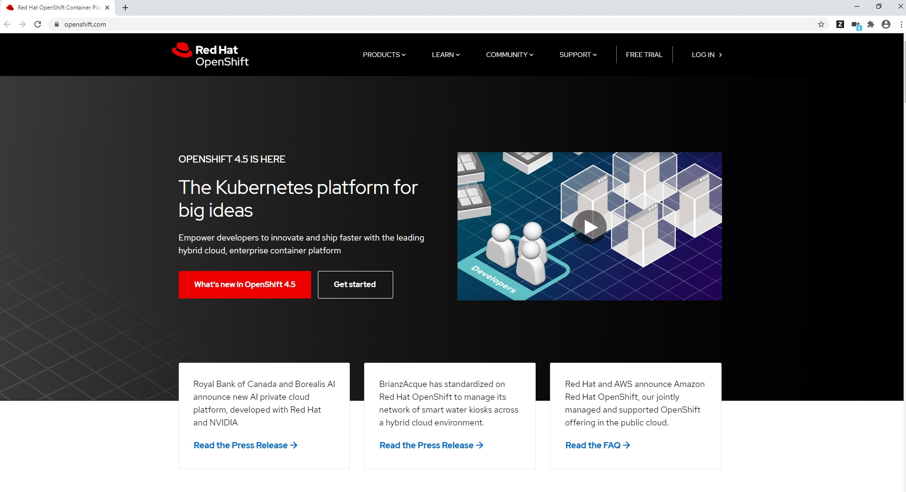
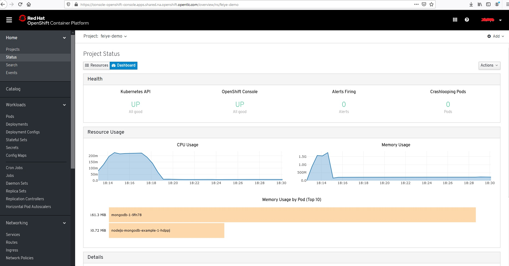
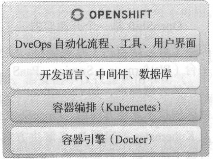

1. 开源容器云概述¶
1.1. 容器时代的IT¶
进入21 世纪，我们的社会和经济发生了巨大的变化，社会对各行业服务的要求越来越 高、越来越细致。新的需求如洪水一样滔滔不绝地从市场的第一线喷涌到企业的产品部门 和IT 部门。企业想要在竞争中获取优势，就必须比竞争对手更快地把产品推出市场。为了 缩短产品从概念到上市的时间，企业的各个流程和流程中的各个环节都要升级优化。企业在 变革，企业IT 自然不能独善其身，必须要跟上市场的节奏响应市场的需求。目标是明确的， 就是速度要更快，成本要更低、质量要更好。但是现实的问题是，如何做到？
为了满足业务的要求，企业盯在不断地变革，而且从未停步。从客户端／服务器模型，变革 为浏览器／服务端模型，从庞大的信息孤岛，变革为基于服务的架构(Service Oriented Architecture，SOA)，从物理机，到虚拟化，再到基础架构云(Infrastructure as a Serice， IaaS）和应用云(Platform as a Service, PaaS) 。对比十几年前，如今IT的效率得到了极大的提升，尤其是进入云时代后， 一切资源变得触手可及。以往应用上线需要的资源，从提出申请，到审批，到采购，到安装，再到部署往往需要至少几十天的时间。在云时代，这些事情往往在几天或几小时便可以准备到位。业界在还没有来得及对云的怀疑之声做出反击回应之前，云就已经征服了整个IT世界。
通过这些年云化的推进，大多数有一定规模的企业已经实现了基础架构资源的云化和池 化，这里的资源指的是诸如虚拟机、数据库、网络、存储。用户可以用很短的时间获取业务 应用所需的机器、存储和数据库。基础架构资源云化其实并不是目的，而是手段。最终的目 标是让承载业务的应用可以更快地上线。但现实是，通过IaaS获取的大量基础架构资源并 不能被我们的最终业务应用直接消费。应用还必须进行或繁或简的部署和配置，才可能运行 在云化的虚拟机之上。部署涉及操作系统配置的修改、编程语言运行环境的安装配置以及中 间件的安装配置等。部署的过程在一些企业仍然是通过于工完成，低效且容易出错。有的企 业则是通过简单的自动化方式完成，提高了效率，但是满足不了后期更高级别的需求，如动 态扩容，持续部署。即使勉强通过简单的自动化实现，后期随着部署平台类型的增多及复杂 化，维护的难度将会陡然提高，无法真正做到随时随地持续交付、部署。
基于这个背景，业界需要有一种手段来填充业务应用和基础架构资源的这道鸿沟。让应 用可以做到“一键式”快速地在基础架构资源上运行。不管底层的基础架构资源是物理机、 虚拟化平台、OpenStack 、Amazon Web service ，还是Microsoft Azure ，都能实现快速、顺畅 地部署交付。为了实现这个目标，业界出现了多种不同的平台，即服务云的容器方案。最终 命运之神的棒槌砸到了一个叫Docker 的开源项目上。Docker 通过对Linux 内核已有机能的 整合和强化，为业务应用提供了一个可靠的隔离环境。此外， 层叠式的Docker 镜像为应用 环境的复用提供了一个绝妙的方案。最后其简单易用的用户命令行，让Docker 快速地获取 了巨大的用户基础，也成就了今日其在容器界的地位。
通过容器这个手段，下一步就是实现应用在大规模云环境进行应用部署。在以往的软件业 中，软件的交付件往往是软件的二进制安装部署包， 比如Java 的WAR 包、Windows 的EXE、 Linux 的RPM 包等。在容器时代，不难想象，未来软件的交付件将会以容器镜像作为载体。容器 镜像中包含了软件应用本身，应用所依赖的操作系统配置、基础软件、中间件及配置。同时这些 镜像将会设计得非常智能，能够自动获取依赖服务的相关信息，如网络IP地址、用户名、密钥 等。在云的环境中部署这些应用，需要做的只是简单地启动容器镜像，实例化出相应的容器，然 后业务应用快速启动，向最终用户提供服务。目前大量的企业正处于这个变革和转型的过程中。
随着容器成为了部署交付件的标准，大量的业务应用将会需要运行在容器环境中，或者 换句话说，未来容器将会成为应用的标准运行环境。那么下一个问题就是，应用如何在容器 的环境中运行得更高效、更稳定？为了更好地运行在容器环境中，应用的架构也必然要发生 变化，变得契合容器的特性。正因为这个背景，最近，业界在热烈地探讨容器之余，也非常 关注应用的微服务化。
如同第二次工业革命蒸汽机带来的冲击一样，容器给IT 业界带来了巨大的冲击。面对 这场变革，企业IT 要做的不仅仅是技术的决策，而且是一个战略性的决策。企业要么主动 拥抱它，要么等待来自竞争对手的压力后，再被动地接受并追赶其他的先行者。
1.2. 开源容器云¶
如前文所述，为了响应快速变化的业务需求， IT 业界正在进行一场变革，在这场变革中， 用户通过容器作为手段，在应用程序开发、测试、部署，在IT 运维的各个环节进行方方面面 的改进和提升。如同第二次工业革命，新技术的应用带来了生产效率和生产力的提升，意味 着顺应变革的企业会有更强的竞争能力。它们的应用能更快地上线，想法能更快地变成现实， 变成企业的现金收入。相反，没有拥抱新技术和变革的企业的竞争能力将会快速下滑。通过 对社区及国内的几场大型容器会议的观察，可以明显感觉到经过了这些年的发展，目前容器 技术的使用已经是不可逆转的趋势。企业现在的关注重点已经不再停留于容器技术可不可用， 而转变到了如何使用容器，如何用好容器来提升自己IT 的效率，提升企业的竞争能力。
既然决定要投入这场变革，拥抱新的技术，那么下一个问题就是：应该怎么做？通过 Docker 启动一个容器很简单，但是要管理好千千万万个容器，需要的不仅仅是热情和勇气。我 们需要回答许多问题，如容器镜像从哪里来？怎么保证容器运行环境的安全？如何进行容器的调 度？多主机上的容器如何通信？容器的持久化数据怎么解决？处理好这些问题，需要有切切实实 可以落地的方案。一个企业要自行解决所有的这些问题，可以说是不可能完成的任务，其需要投 入的人力、物力和时间成本，不是单纯一个企业可以接受的。通过现有的技术或平台快速构建企 业自有的容器平台，从经济成本及技术难度角度考量，可以说是更为符合现状的合理选择。
现代容器技术的根据地是开源社区。开源社区提供了一个活跃的舞台，这个舞台凝聚来 自世界各地的企业、团队及个人。可以说目前开源社区是IT 行业创新发生最高度密集的地 方。开源软件目前被应用在IT 行业的方方面面，如我们的开发工具、编程语言、编程框架、 中间件、数据库、操作系统、储存、网络、云等。通过开源社区的技术，完全可以构建出 一个稳定可靠的企业IT 技术堆拢。现今企业要基于已有的解决方案构建自有的容器云平台， 我认为，开源的容器云平台是一个必然的选择。
1.3. Openshift¶
图1 - 1 容器云Openshift主页
OpenShift是一个开源容器云平台，是一个基于主流的容器技术Docker 及Kubernetes 构建 的云平台。作为一个开源项目， OpenShift已有5年的发展历史，其最早的定位是一个应用云 平台（ Platform as a Service, PaaS ）。在Docker 时代来临之前，各个厂商和社区项目倾向构建自己的容器标准， 如CloudFoundry 的Warden 、OpenShift的Gear ，但是在Docker 成为主流及社区的技术发展方向后， OpenShift的快速地拥抱了Docker ，并推出了市场上第一个基于Docker及Kubernetes的容器PaaS 解决方案。OpenShift对Docker 及Kubernetes 的整合和OpenShift 项目最大的贡献方红帽公司（ Red Hat Inc. ）有着很大的关系。Red Hat 对于Linux 和开源爱好者而言不用过多的介绍，在某个时代， Red Hat 几乎成为了Linux 的代名词，它是目前世界上最大的开源软件公司，是开源社区的领导者。Red Hat 是OpenShift位项目最大的贡献者，同时也是Docker 和Kubernetes 项目重要的贡献方。正是Red Hat 对社区技术发展的敏锐触觉促成了OpenShift与Docker 及Kubernetes 的整合。事实证明这个决定非常明智。OpenShift 前几年在容器和PaaS 领域的经验积累，叠加上Docker 和Kubernetes 容器及容器编排上的特性， 一经推出就受到了广泛的关注和好评，连续两年获得Info World 年度技术创新大奖。
通过OpenShift这个平台，企业可以快速在内部网络中构建出一个多租户的云平台，在这朵 云上提供应用开发、测试、部署、运维的各项服务（如图1-2 所示）。OpenShift在一个平台上贯 通开发、测试、部署、运维的流程，实现高度的自动化，满足应用持续集成及持续交付和部署 的需求；满足企业及组织对容器管理、容器编排的需求。通过OpenShift 的灵活架构，企业可以 以OpenShift作为核心，在其上搭建一个企业的DevOps 引擎，推动企业的DevOps 变革和转型。
图1-2 OpenShift 上运行的容器应用
1.4. Docker 、Kubernetes 与OpenShift¶
许多刚接触OpenShift 的朋友会有这样一个疑问：“ OpenShift 与Docker 及Kubernetes 的关系究竟是什么？” OpenShift 是基于容器技术构建的一个云平台。这里所指的容器技术即包含Docker 及Kubernetes。如图1-3 所示， OpenShift 底层以Docker 作为容器引擎驱动，及Kubernetes 作为容器编排引擎组件。OpenShift提供了开发语言、中间件、自动化流程工具及界面等元素，提供了一套完整的基于容器的应用云平台。
图1-3 OpenSbift 的技术堆榄
1.4.1. 容器引擎¶
Docker 的优势在于它可以构建一个隔离的、稳定的、安全的、高性能的容器运行环境。目前，OpenShift 使用原生的Docker 作为平台的容器引擎，为上层组件及用户应用提供可靠安全的运行环境具有十分重要的价值：
Docker 有非常大的用户基础。以Docker 为基础引擎，降低了用户学习的成本。熟悉Docker 的用户可以非常容易地上手。
Docke rHub 上有海量的镜像资源。我们日常使用的绝大部分软件，都可以在Docker Hub上找到官方的或社区贡献的镜像。所有的这些镜像都可以无缝地运行在OpenShift 平台上。
Red Hat 本身就是Docker 的一个主要贡献者，它们对社区有着很强的影响力，对这个技术的发展也有着很强的领导力。这一点对企业用户来说非常关键，因为谁也不想投资在一个没有前景或过时的技术上。
这里值得关注的一点是OpenShift 使用的Docker 是原生的Docker，没有任何闭源的修改。因为历史的原因，有些应用云平台如CloudFoundry 的选择是兼容Docker 的。通过拷贝Docker 的部分源代码加入它们的容器引擎中，以读取Docker 镜像的内容，然后启动一个非Docker 的容器实例。这种兼容的做法，我个人认为是值得商榷的。这让我联想起了当年安卓崛起后，为了挽回颓势，黑莓手机（ BlackBerry ）推出在自家系统中兼容运行安卓应用的做法。作为曾经黑莓ZlO 的用户，我非常喜欢那款精致的手机，但不得不说，在黑莓系统上运行安卓应用，简直就是一个噩梦。
1.4.2. 容器编排¶
Docker 的流行使得当下每每提起容器时，大家更容易想到的是Docker ，甚至说是只有Docker。但是现实是， Docker 其实只是容器技术中的一个点。Docker 是一款非常优秀和受欢迎的容器引擎，但是当企业或者某一个组织要大规模地将容器技术应用到生产中时，除了有优秀的容器引擎提供稳定可靠及高效的运行环境之外，还需要考虑集群管理、高可用、安全、持续集成等方方面面的问题。单凭一个容器引擎，并不能满足容器技术在生产环境中的需求，尤其是规模较大的生产环境。
在大规模的容器部署环境中，往往涉及成百上千台物理机或者运行于IaaS 之上的虚拟机。面对数量庞大的机器集群，用户面临着巨大的管理挑战。举个简单的例子，假设我们需要在100 台机器上启动100 个容器实例，通过手工的方式在100 台机器上执行docker run 命令将会是一件疯狂的事情。又比如，我们希望20个容器部署在美国机房、20个容器部署在上海机房、20个容器部署在深圳机房有SSD的服务器上， 20个容器部署在深圳机房带万兆网卡的机器上，通过人工或者传统的自动化工具来实现复杂的部署需求将会十分低效。现实是，为了满足容器集群所需的调度、网络、储存、性能及安全的需求，我们必须有专业的工具和平台。这些关于容器集群管理的问题，其实就是容器编排的问题，即Kubernetes 要解决的问题。
Kubernetes 是Google 十多年容器使用经验的总结，虽然Google 使用的容器是Docker时代之前的容器，但是业务应用对安全、性能、隔离、网络、储存及调度方面的需求，在最原始的本质上其实并没有发生变化。Google 选择和Red Hat 一同开源了Kubernetes ，且目前在GitHub 上的关注程度远远高于其他同类的平台，未来非常可能在容器编排领域成为类似Docker 一样的“事实标准” 。
Note
Kubenertes项目GitHub仓库：https://github.com/kubernetes
OpenShift集成了原生的Kubenertes作为容器编排组件。OpenShift 通过Kubenertes来管 理容器集群中的机器节点及容器，为业务应用提供：
容器调度：按业务的要求快速部署容器至指定的目标。
弹性伸缩：按业务的需要快速扩展或收缩容器的运行实例数量。
异常自愈：当容器实例发生异常，集群能自动感知、处理并恢复服务状态。
持久化卷：为散布在集群不同机器上的容器提供持久化卷的智能对接。
服务发现：为业务微服务化提供服务发现及负载均衡等功能。
配置管理：为业务应用提供灵活的配置管理及分发规则。
1.4.3. 容器应用云¶
前文谈到了容器引擎及容器编排，这两项是容器技术的重要基石。掌握这两个基石，用户就具备了运维大规模容器集群的能力。现实中用户考虑使用容器应用平台的一个最终的目的就是提高生产效率。容器引擎及容器编排组件是两项关键的技术，但是光有技术还不能满足生产效率的要求。在这些技术及框架的基础上，必须有更丰富的内容以及更友好的用户接入方式，把这些技术转化成实实在在的生产力。
OpenShift 在Docker 和Kubenertes 的基础上提供了各种功能，以满足业务应用、研发用户及运维用户在生产效率上的诉求。
应用开发框架及中间件。OpenShift 提供了丰富的开箱即用的编程开发框架及中间件，如Java、PHP、Ruby、Python、JBoss EAP、Tomcat、MySQL、MongoDB 及JBoss系列中间件等。
应用及服务目录。OpenShift 提供了如软件市场式的服务及应用目录，可以实现用户一键部署各类应用及服务，比如一键部署Hadoop 集群和Spark 集群。
自动化流程及工具。OpenShift内置了自动化流程工具S21 ( Source to Image ），帮助用户自动化完成代码的编译、构建及镜像发布。
软件自定义网络。通过OpenVSwitch, OpenShift 为用户提供了灵活强健的软件定义网络。实现跨主机共享网络及多租户隔离网络模式。
性能监控及日志管理。OpenShift 提供了开箱可用的性能监控及日志管理的组件。通过平台，业务能快速获取运行状态指标，对业务日志进行收集及分析。
多用户接口。OpenShift提供了友好的Web 用户界面、命令行工具及RESTfulAPI 。
自动化集群部署及管理。OpenShift通过Ansible 实现了集群的自动化部署，为集群的自动化扩容提供了接口。
通过前面的介绍，我们可以了解到OpenShift 在Docker 及Kubenertes 的基础上做了方方面面的创新，最终目的就是为用户及业务应用提供一个高效、高生产力的平台。
1.5. OpenShift 社区版与企业版¶
OpenShift 是一个开源项目，所有的源代码都可以在GitHub 仓库上查阅及下载。企业和个人都可以免费下载和使用OpenShift构建属于自己的容器云平台。我们也可以加入OpenShift 的社区成为一名光荣的OpenShift 社区贡献者。
Note
Openshift项目主页: https://www.openshift.com。
Openshift GitHub仓库：https://github.com/openshift。
开源软件的一大好处在于，用户可以自由选择和免费使用。缺点是没有人会对软件的使用提供支持保障。对于个人用户来说，这不是问题。但是对于企业来说，更多是希望有人能在出现问题的时候提供专业的支持和保障。这种需求给一些公司提供了机会，他们在开源软件的基础上进行定制、测试、修复及优化，推出企业版本，并对之进行支持。这种软件称为开源商业软件。Red Hat 就是开源软件商业模式的奠基人，而且是目前世界上最大的开源软件公司。OpenShift 的开源社区版本叫OKD Origin, Red Hat 在OKD Origin 的基础上推出了OpenShift 的企业版本，其中包含了公有云服务OpenShift Online 及私有云产品OpenShift Container Platform （ 以前也称为OpenShift Enterprise ）。更多关于OpenShift企业版的信息可以访问OpenShift企业版的主页： http://www.openshift.com 。
OpenShift的企业版和社区版在代码上十分相似，功能上可以说是基本一致。企业版是基于某个社区版版本产生的。作为一个开源软件公司， Red Hat 所有产品的企业版的源代码也是完全公开的。就我个人的经验而言，企业版往往会更稳定，因为社区版的代码变化会更频繁。
经常会被问到这样一个问题：“究竟我们是使用社区版还是企业版比较好？”这个问题没有唯一的答案，要视用户所处的使用场景而言。对于个人用户的开发测试及出于研究目的而言，社区版会是一个不错的选择，但是其实OpenShift 的企业版也对个人用户免费开放。对于企业的关键业务应用的部署而言，企业版自然会是更好的选择，企业版除了稳定以外， 还有专业的售后支持。
目前一些OpenShift 的企业客户，在使用OpenShift 企业版的同时，也会将他们的需求以提案或代码的方式提交到社区，在被社区评审接纳以后融入成为OpenShift 产品未来版本的核心特性。这样做的好处是，企业所需的功能往后就由社区进行维护，不存在如自定义的修改在未来版本还需要进行测试及匹配，从而带来不可预知的工作量和风险。企业用户参与到开源社区，可以对产品的发展方向发表自己的看法。从而避免在传统的闭源商业软件时代用户只能被厂商牵着鼻子走的窘境。
本书的内容将以OpenShift 企业版进行探讨及讲解。相关的经验也适用于OpenShift 的社区版。在一般情况下，本书将直接使用OpenShift来指代OpenShift的社区版和企业版。在企业版和社区版存在差异的情况下，将会特别标注。
接下来让我们扬帆起航，开启一段通往企业容器云的旅程。